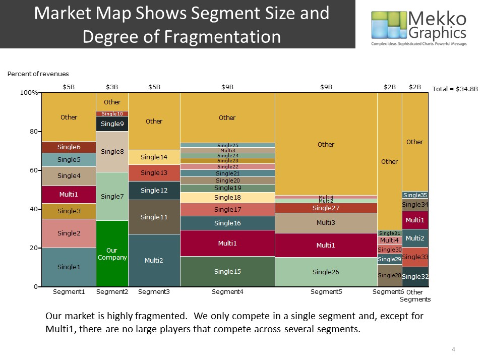
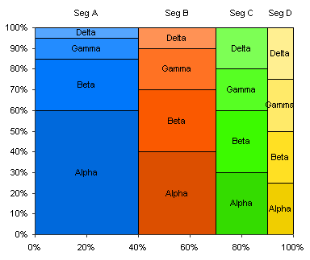

Marimekko.... “Mekko,” “mosaic,” or “matrix”...
DESCRIPTION: "This graph encodes two quantitative variables: one using the height and one using the width of the bars. By attending to the heights of each bar segment, we can see what percentage of each company’s total sales were handled by each of the three sales channels. By attending to the widths of the bars, we can see the relative magnitudes of each company’s total sales. Each company’s sales in each individual channel is encoded through the areas of the rectangles (that is, the individual bar segments). For instance, comparisons between Reebok’s U.S. sales and Adidas’ International sales can be made by comparing the areas of the two rectangles that represent them."
"Both Marimekko charts and traditional treemaps segment a rectangular area into smaller rectangles. In both cases, the areas of the rectangles encode data. In the case of treemaps, an additional quantitative variable is encoded through color. Although the length and width of the different rectangles in a treemap might vary, no values are encoded by either of these dimensions individually. Area is the only spatial dimension used to encode data in treemaps. In the case of Marimekko charts, however, separate values are encoded by the length and the width of each rectangle."
https://www.perceptualedge.com/example13.php
USE: Marimekko chars are generally usefull for analyzing business data to compare market trends, fiancial data analysis, or sales monitoring.
ADVANTAGE / DISADVANTAGE: The main advantage is that you get to represent two sets of data at once in both height and width. This juxtaposition offers an additional later of comparative analysis. A disadvantage is they are less streightforward to read. The double later of information take more time to process.
HISTORY: Marimekko chars are a derivitave of tree graphs but they were expanded in form and concept by Ben Schneiderman in 2006.
HOW TO BUILD: With a simple google search you can find Microsoft Word templates. They can also be made in Excel, though there is no official integration. Workaround can be found here: http://peltiertech.com/marimekko-charts/
Examples

